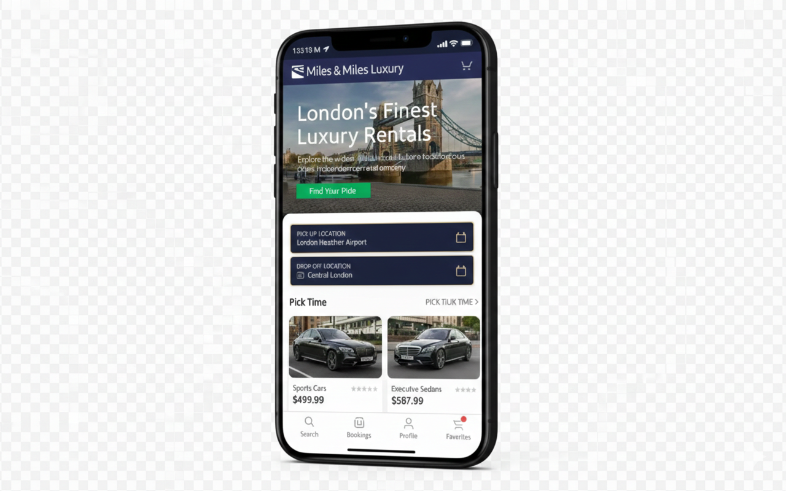
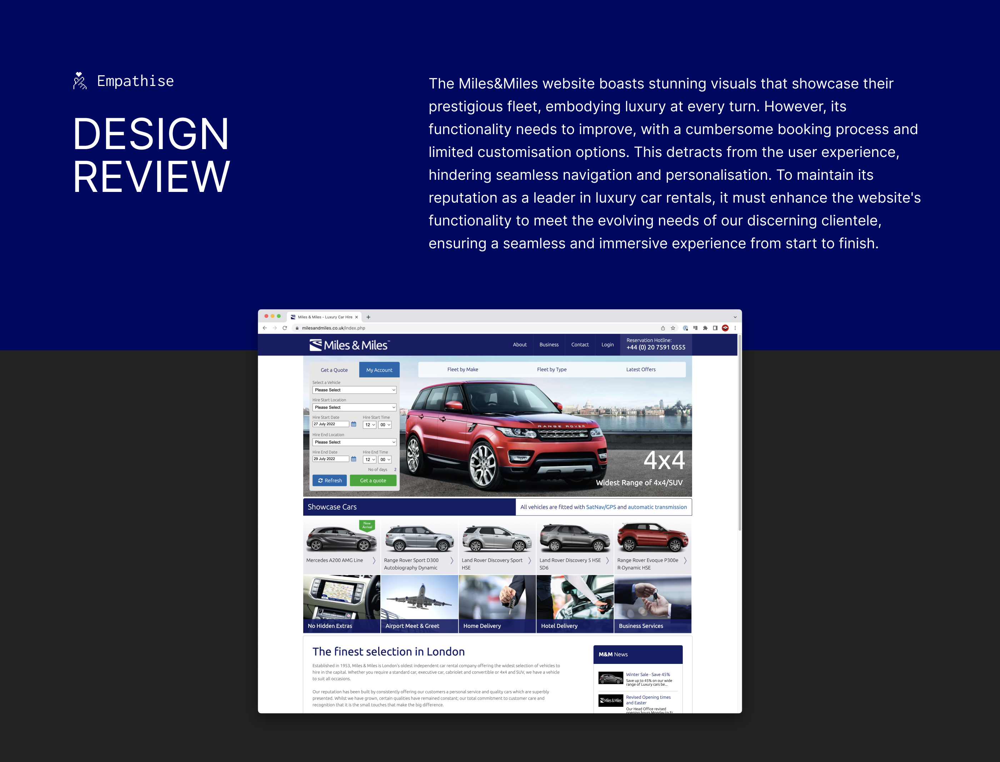
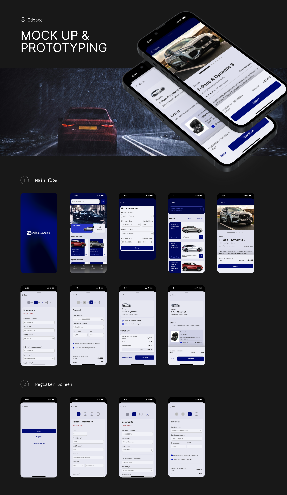

Translating a luxury, relationship-driven car rental into a premium digital experience without losing the white-glove service that built the brand.

Miles & Miles has been London's premier luxury car rental since 1953. Their fleet includes Bentleys, Rolls-Royces, and Aston Martins—cars that command £500–£1,200 per day. Yet their booking experience was a desktop-only web form with impersonal stock photography and a clunky multi-page flow. The disconnect was damaging the brand.
The core tension: this business built its reputation on human relationships and white-glove service. Phone calls with experienced consultants. Personal preferences remembered across years of bookings. The business feared that moving to digital would strip away the premium positioning that justified the price point.
High-net-worth clients were abandoning bookings mid-flow. The business was losing deals to competitors with superior digital experiences. My brief: create a mobile-first booking platform that felt as premium as the cars themselves—and that customers would choose over calling.

I conducted in-depth interviews with 8 high-value clients (£2M+ annual spend on rentals) and analysed competitor apps (Turo, Sixt, Blacklane). The goal wasn't to chase lowest-common-denominator UX, but to understand what would make luxury buyers *prefer* mobile to phone calls. Three insights emerged that fundamentally shaped the design direction:
These users value their time above any luxury good. They said: "If I can book a Bentley faster than I book an Uber, you've won." They weren't comparing to Avis—they were comparing to Stripe's checkout speed.
For £500–£1,200/day transactions, users deeply cared who was driving them. They wanted a driver's photo, experience level, and reviews. Without it, they'd pick up the phone and call instead.
Frequent clients (5+ bookings/year) were frustrated re-entering billing, dates, and preferences. They said the app should "act like my concierge, not my travel agent"—anticipating their needs, not making them repeat.
Needs a booking experience that takes seconds, not minutes, and remembers his preferences across trips.
"I shouldn't have to re-enter my billing details at Heathrow. My Uber knows my card, why doesn't this?"
Wants a car that matches the aesthetic of her events, with a personal driver who knows London.
"I need to know who's driving me. A profile photo and rating would go a long way."
Rather than documenting every wireframe iteration, here are the 3 decisions that had the biggest impact on the final product:
The existing web form had 8 pages: vehicle type, dates, location, extras, driver preference, insurance, billing, confirmation. Research showed most users wanted the same configuration every time, and every additional step felt like friction from a "business process", not a premium service.
I collapsed this into 4 steps: Browse → Select → Personalise → Confirm. Driver and extras became an optional layer rather than mandatory steps. Returning users could skip straight to confirmation with saved preferences—bringing the booking experience closer to the concierge call experience they preferred, just faster.
→ Reduced average booking time from 6+ minutes to 87 seconds in usability testing.
Competitors used thumbnail grids that made £800/day Bentleys look identical to £100/day economy cars. This is a fundamentally broken mental model for luxury. The browsing experience IS the brand experience—and cluttered grids feel like a used car lot, not a curated selection.
I designed full-width editorial cards with cinematic photography, transparent all-inclusive pricing, and a curated "Concierge Picks" section showing 3-5 hand-selected vehicles instead of the full fleet of 47. The reduction felt like taste-making, not limiting inventory.
→ Users spent 40% less time deciding but reported feeling "more confident" in their choice. Premium positioning strengthened.
Isabella's insight was crucial: for high-value clients, the driver matters as much as the car. A Bentley with an untrusted driver is a £900 liability. The business resisted adding driver profiles, citing privacy and operational concerns.
The solution: professional headshots, first names, years of experience, verified badge, and a 5-star rating system. No last names or personal details. This gave users enough human context to feel confident, while keeping the driver's privacy intact. The design moved the transaction from impersonal to personal.
→ "Chauffeur add-on" selection rate jumped from 23% to 61% in testing—the biggest conversion driver in the redesign.

The visual language needed to feel like stepping into a Bentley showroom, not a tech startup. I used Imperial Navy for authority and Vibrant Green as the sole action colour, ensuring every tap target was immediately identifiable.
After 3 rounds of usability testing with 12 participants matching our target personas, the redesigned experience delivered measurable improvements across every key metric:
Note: These results are from prototype testing with simulated bookings, not real transactions. Sample size was 12 participants across 3 rounds. Real-world performance may differ.
The usability testing validated the core design decisions. But this hasn't been built or launched yet — Miles & Miles is evaluating whether to move forward with development. Here's what a real launch would need to answer:
Testing with fake bookings showed 85% completion and 87-second booking times. But when real £800/day transactions are involved, behaviour changes. A small pilot with real payments would be the true test.
The app might attract new digitally-native clients, but existing clients may still prefer calling their usual consultant. Both channels would likely need to coexist for a transition period.
The 61% chauffeur add-on rate was the biggest win in testing. But maintaining up-to-date profiles, photos, and ratings for a fleet of drivers requires operational investment the business hasn't committed to yet.
All usability testing used fake bookings. For a £500-£1,200/day service, the psychological difference between pretend and real money is enormous. Next time, I'd push for a small real-payment pilot even during the prototype phase.
This was a solo design project. In hindsight, involving a developer early would have caught feasibility issues sooner, and co-designing with Miles & Miles staff would have surfaced operational constraints I missed.
The biggest lesson: premium users don't want more features. They want fewer, better ones. Every element I removed made the experience feel more luxurious. This changed how I think about design in general.
Like what you see?
I'm always interested in complex design problems. If you're building something ambitious, let's talk.